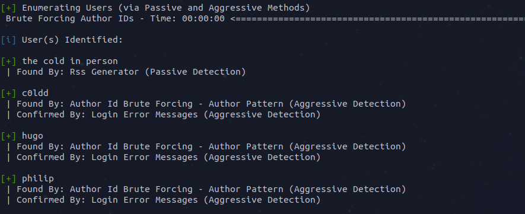
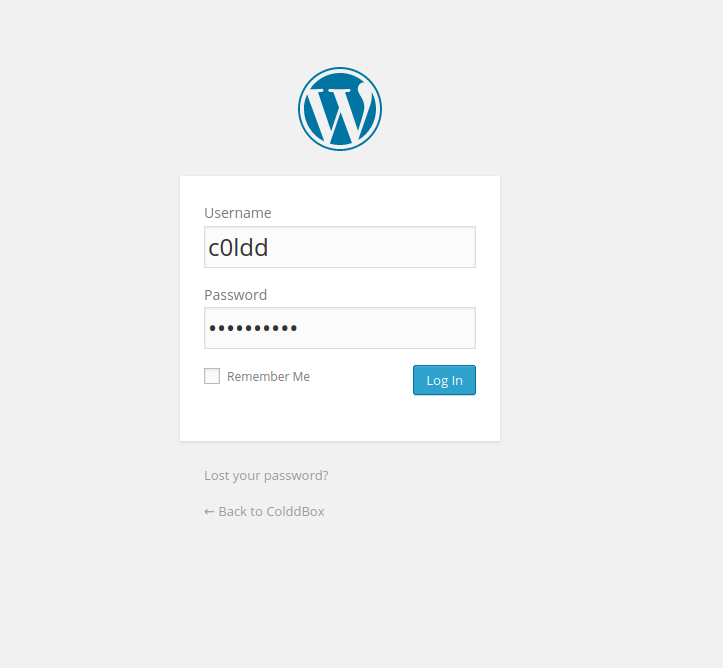

bolo@write-up:~$ cat Task.txt
From tryhackme.com
Can you get access and get both flags?Good Luck.!Note: All of the ips shown in this write-up will probably not be the same for you.
bolo@write-up:~$ cat user.txt
First, we'll start by a basic nmap scan.
As we can see, there is only the port 80 opened on this machine, lets browse to its http server using our browser !
This website is using the Wordpress CMS, lets run a gobuster dir finder on it...
We find a /hidden page on the website, browse to it and see what we have here !
Now, we can use the very good wpscan tool to enumerate the users and bruteforce them.
Bruteforcing one of the user can take a pretty long time, the first one we are able to log into is the c0ldd's account.In order to win you a little bit of time but still let you gain experience, I made you a wordlist of 500 passwords out of rockyou.txt ( the good one is obviously included ).
Now that we are logged on and that we have an admin account on the website, we can use our privileges to edit the website's theme in order to get a reverse shell.To do so, go to the theme editor and replace the 404.php content with a reverse shell that can be found here, don't forget to change the IP address to your THM vpn.
Once the file is updated, we can browse to wp-content/themes/twentyfifteen/404.php to get our reverse shell !
Now that we have access to the machine, we can upgrade our shell to a more efficient one ( you can use this guide to upgrade your shell ) and find a way to get at least a regular account and afterwhat get root ! To do so, I will use the Linepeas.sh script to try to elevate my privileges.

Once the linepeas script is on the victim's machine ( be sure to navigate to the /tmp folder, else you won't be able to write anything ) we can start our enumeration. The script found us 3 files where passwords were stored, lets take a look at them !
Nice ! We found some credentials for a db using c0ldd's account, but why not trying to log into this machine using these same credentials ? Easy ! Now that we are logged on, we can get our user.txt flag.
Answer: Try to find it by yourself :D
bolo@write-up:~$ cat root.txt
Now, we need to get root, and as we are logged with a user account with its password, we can use the sudo -l command.

We can use one of these 3 programs to get our privesc done. I'm using the gtfobins website to get my reverse shell using the ftp binary.

Answer: Try to find it by yourself :D